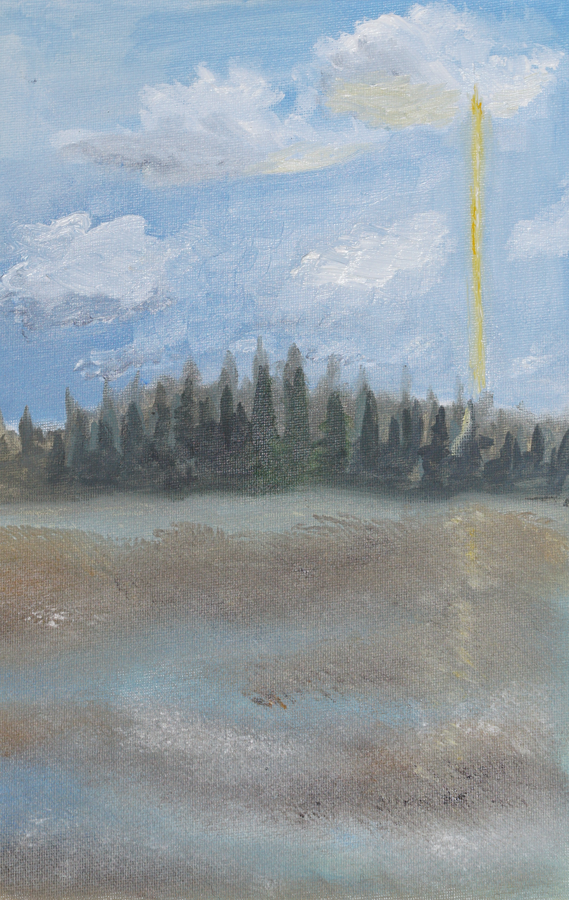
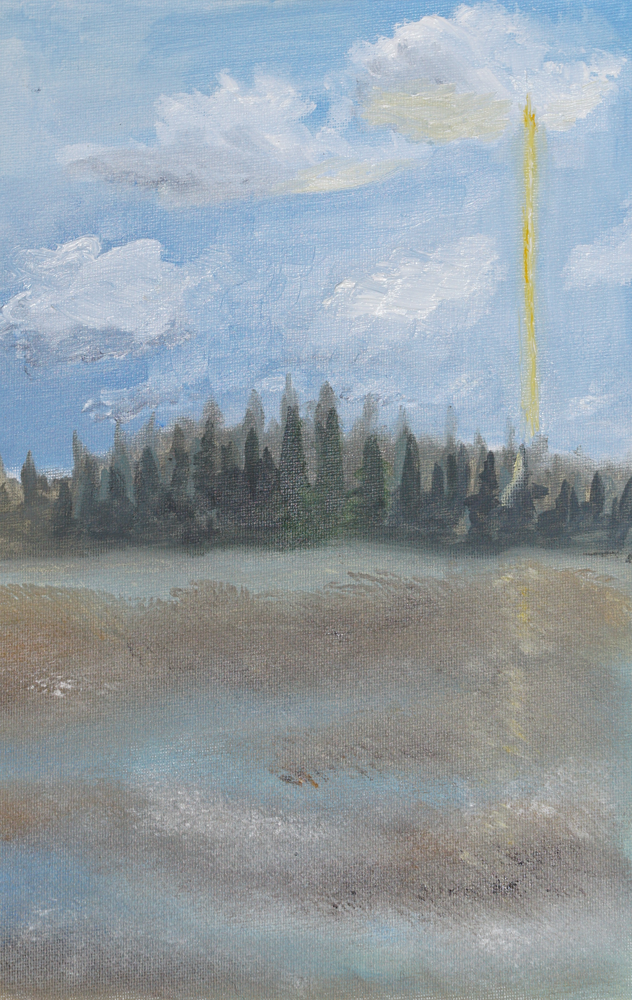

Столб света
посреди
тайги
 

 04.10.22 Холст на картоне 20х30, масло
Поездки вдохновляют меня. Я помню, как осенью ехала в поезде, глядя в окно на лес,
04.10.22 Холст на картоне 20х30, масло
Поездки вдохновляют меня. Я помню, как осенью ехала в поезде, глядя в окно на лес,
покрытый первым снегом, и чувствовала спокойствие. Много тревожных событий
происходило тогда в мире, и этот момент спокойствия был очень ценным для меня.
Когда не знаешь чего ожидать и не чувствуешь себя в безопасности, хочется просто
отправиться на прогулку в лес. Но даже здесь от тревоги порой не скрыться.
Жухлая коричневая осенняя трава, покрыта серебристым инеем. Густые ряды
зеленых елей. Голубое небо с безмятежно плывущими облаками. Все словно окутано
сном. И контрастный ярко-желтый столб света, источник которого неизвестен,
освещает все вокруг.